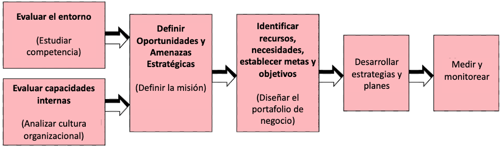
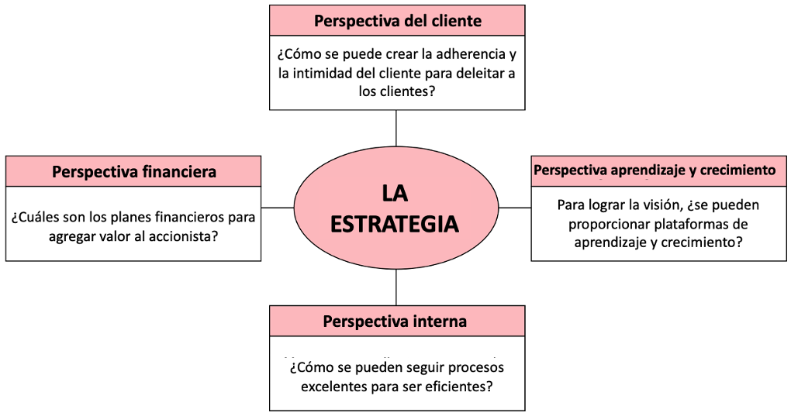
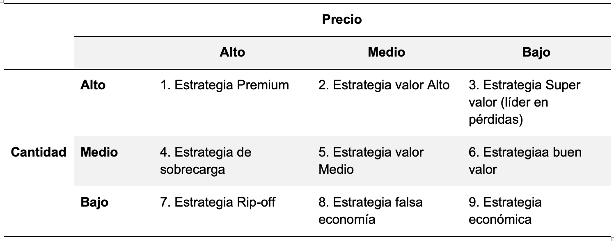
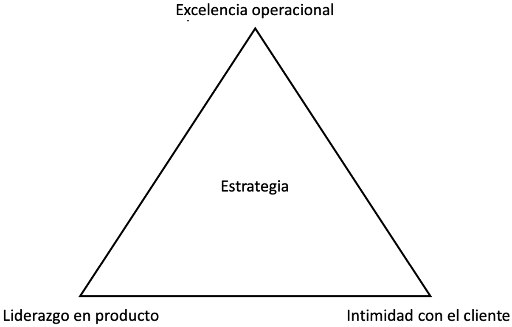
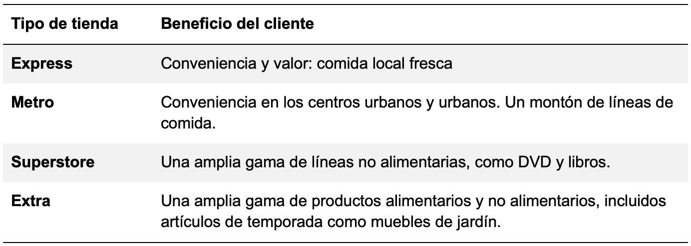
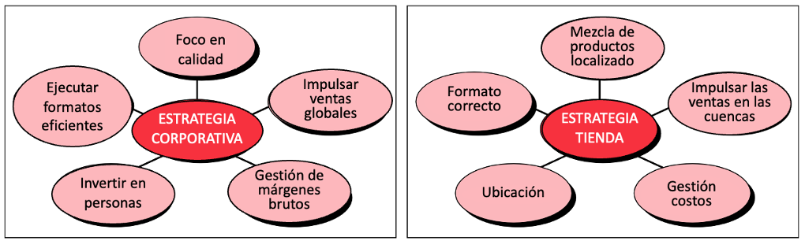

Objetivos
Capte los detalles de las áreas estratégicas en las que los minoristas deben enfocarse para emerger como ganadores.
Comprender las bases sobre las que un minorista puede construir una ventaja sostenible.
Distinguir la importancia de los enfoques estratégicos de varias organizaciones minoristas
Sepa cómo la planificación estratégica puede ayudar a construir el negocio minorista.
Estrategia definida
Una organización minorista debe tener una estrategia clara y una ventaja competitiva sobre otros minoristas para emerger como ganadora. La estrategia generalmente se define como un plan a largo plazo de una organización para lograr sus objetivos de negocio. Esto incluye el diseño de sus diversas acciones y planes de ejecución de dichas acciones de manera ‘holística’. En una perspectiva moderna, la estrategia se concibe como un conjunto de ideas y análisis que darán como resultado procesos y acciones planificadas y ejecutadas para lograr una ventaja competitiva en los negocios para tener éxito. A menudo se dibuja un paralelo de estrategia como una alegoría con las operaciones militares: competir en los negocios es similar a ganar una guerra
Un despliegue ‘holístico’ bien pensado de recursos en una operación militar influye en los resultados. En los negocios, el enfoque único de frustrar los movimientos de cada competidor ayudará a una organización a lograr el éxito deseado dentro de los plazos prescritos. En esencia, la estrategia corporativa como la operación militar se trata de un enfoque “holístico” para ganar, con un enfoque en el logro de las metas corporativas y los objetivos comerciales.
Estrategia y Táctica
La estrategia a menudo se confunde con la táctica, mientras que la estrategia es holística con la participación de toda la organización para lograr los objetivos y ganar, la táctica es una acción o un movimiento que se lleva a cabo instantáneamente a corto plazo para lograr el éxito. Un enfoque táctico es tal vez reducir los precios temporalmente y tomar una serie de acciones de este tipo para ganar a la competencia o lograr más ventas en un período de tiempo limitado. Por el contrario, un movimiento estratégico puede ser adquirir el negocio de un competidor para afianzarse en un territorio comercial no representado y lograr el crecimiento como un plan a largo plazo.
Los expertos en estrategia organizacional Johnson y Scholes definen la estrategia como la dirección y el alcance de una organización a largo plazo, que logra una ventaja para la organización a través de la configuración de sus recursos dentro de un entorno cambiante, para satisfacer las necesidades de los mercados y cumplir con las expectativas de las partes interesadas.
Desarrollo de un marco de estrategia
Los expertos en estrategia organizacional opinan que la estrategia de una organización debe basarse en un marco elegido para la creación de valor.
Marco estratégico 1
El marco común considerado para desarrollar la estrategia organizacional parte de escanear el entorno y estudiar primero la competencia relevante para que se pueda entender la posición que debe tomar la organización para crecer. Como segundo paso la organización debe entender sus capacidades analizando su cultura para trabajar en la dirección correcta. Luego, la organización debe identificar y reunir sus recursos de manera óptima y establecer sus metas y objetivos de manera específica. Luego se deben desarrollar las estrategias para alcanzar los objetivos de negocio. Periódicamente, los resultados deben ser medidos y monitoreados para hacer las correcciones de rumbo requeridas.

Marco estratégico 2
Robert S. Kaplan y David P. Norton, quienes introdujeron el revolucionario sistema de medición del desempeño, Balanced Scorecard, dicen que muchas organizaciones lo utilizan no solo como un sistema de medición, sino también como un sistema de gestión estratégica. El Balanced Scorecard ofrece un marco apropiado para describir estrategias para crear valor con sus cuatro perspectivas clave, como la perspectiva financiera, la perspectiva del cliente, la perspectiva interna y la perspectiva de aprendizaje y crecimiento.
Perspectiva financiera
Siendo el desempeño financiero un indicador clave para el éxito de una organización, la estrategia puede describir cómo puede crear un crecimiento sostenible en los rendimientos de los accionistas.
Perspectiva del cliente
La estrategia puede definir la propuesta de valor para los diferentes segmentos de clientes, cómo la organización puede crear adherencia al cliente para aumentar el valor de por vida de los clientes.
Perspectiva Interna
Los procesos internos pueden ser descritos por la estrategia los procesos que pueden entregar la propuesta de valor para los clientes. El desempeño de los procesos internos también puede indicar mejoras en el desempeño financiero.
Perspectiva de aprendizaje y crecimiento
Los objetivos de aprendizaje y crecimiento pueden describir cómo se puede realizar en la organización un valor agregado continuo a las personas, la tecnología, el clima organizacional, etc., para respaldar las estrategias comerciales.

Para una organización minorista, la estrategia corporativa y la estrategia de la tienda juegan un papel importante para lograr el éxito en el mercado.
Marco estratégico 3
Otro marco de estrategia seguido en el comercio minorista se basa en el modelo de posicionamiento competitivo para adquirir una ventaja competitiva. El marco se basa en obtener una ventaja en las siguientes tres dimensiones:
Liderazgo de producto
Excelencia operacional
Intimidad con el cliente
Liderazgo de producto
El liderazgo de producto se logra cuando la organización está enfocada en su estrategia de innovación y calidad del producto. La estrategia de diferenciación del producto entra en juego cuando hay innovación en el producto, o cuando la mercancía tiene características únicas y exclusivas de la organización minorista. Por ejemplo, el minorista de ropa lista para usar Westside ha comercializado sus tiendas con sus marcas privadas, exclusivas de sus tiendas. El minorista de relojes Titan es constante en la introducción de nuevos diseños de alta calidad en el mercado y la marca disfruta de su estatus de liderazgo en la categoría de relojes en la India desde hace mucho tiempo. Sheetal Design Studio tiene un “creador” para su mercancía de diseñador, con Hemant Trevedi diseñando exclusivamente para la tienda.
Estrategia para fijar precios
La diferenciación por una oferta distintiva de mercancías también se puede hacer a través de una estrategia de fijación de precios eficaz. El precio hace mucho por el minorista. Por ejemplo, la tienda minorista puede aumentar sus visitas con una estrategia de precios líder o puede proporcionar valor a los clientes con una estrategia de precios líder en pérdidas. La fijación de precios de líder de pérdidas significa vender mercancías o parte de las mercancías al costo o cerca del costo con fines promocionales para atraer clientes y establecer una reputación de “precio bajo”. Desarrollar la estrategia de fijación de precios, por lo tanto, es fundamental para una organización minorista. Puede tener una estrategia de precios alta, media o baja, como se muestra en el gráfico a continuación.
Tabla 1.1 Matriz de estrategia de precio-valor

Excelencia Operacional
Esto se logra cuando todos los procesos operativos de la organización minorista están bien definidos y es capaz de satisfacer a los clientes de manera progresiva y rentable. La organización puede alcanzar la excelencia operativa si se fija y logra altos estándares en su área de operaciones. Por ejemplo, McDonalds en Mumbai afirma que puede entregar el pedido antes de que se agote el reloj de arena; el asociado de servicio al cliente realiza un seguimiento del tiempo de proceso, desde que se toma el pedido hasta que se entrega. Debe haber altos estándares operativos y procesos de entrega rápidos para lograr esta excelencia operativa. El proceso de compra central no negociable de Walmart garantiza una excelencia operativa tan precisa que siempre entrega sus productos a los clientes a precios bajos.
Intimidad con el cliente
Una estrategia progresiva de servicio al cliente crea la “pegajosidad” con la tienda para que los clientes la visiten repetidamente. Esta es un área en la que todos los minoristas anhelan alcanzar los más altos estándares.
Muchas organizaciones minoristas tienen programas de gestión de relaciones con los clientes (CRM) que les ayudan a conocer los patrones de compra de sus clientes. Esto también les permite diseñar un paquete integral de beneficios para ellos. Las organizaciones minoristas como Shopper’s Stop han utilizado con éxito los programas de fidelización de clientes, aumentando su base activa de consumidores y brindándoles planes de beneficios innovadores. También se enfocan en obtener una mayor parte de las ventas de la base leal de consumidores.
La intimidad con el cliente ayuda a lograr la diferenciación cuando la organización minorista supera los niveles esperados de servicio al cliente. Por ejemplo, en una tienda minorista de Nordstrom, el asociado de atención al cliente debe “pedir permiso” a los superiores si tiene que decir “no” a un cliente.
Figura 1.1 Estrategias para lograr una ventaja competitiva

Estrategia corporativa
La dirección sustentada de la organización para lograr sus objetivos comerciales proporcionada por la creación del propósito, los valores y las metas a nivel de liderazgo corporativo para cumplir con las expectativas de todas las partes interesadas se conoce como estrategia corporativa. La estrategia corporativa proporciona una dirección clara para el negocio. Determina los objetivos estratégicos (por ejemplo, rentabilidad/crecimiento del mercado). Identifica y asigna los recursos necesarios para ejecutar la estrategia comercial de manera holística. Mide el desempeño empresarial frente a los objetivos estratégicos y promueve la cultura de cambio/mejora continua en la organización. Como parte de su estrategia, el minorista de alimentos del Reino Unido Tesco diversifica sus operaciones en ubicaciones multinacionales para lograr el crecimiento. La organización opera en más de 12 países y recientemente también ha puesto un pie en los Estados Unidos de América.
Estrategia de tienda
La estrategia de la tienda debe estar alineada con la estrategia corporativa. La estrategia de la tienda puede diseñarse para el éxito de la tienda específica con un enfoque holístico para reunir e implementar todos los recursos para que la tienda funcione como una tienda exitosa. Por ejemplo, la estrategia de combinación de mercancías de una tienda puede diferir de otra según las preferencias de ubicación específicas y las áreas de captación, siguiendo las necesidades y deseos de los clientes. Tesco, por ejemplo, satisface las necesidades locales del mercado al adoptar diferentes formatos de tienda para adaptarse a cada ubicación dentro de un país.

Si bien Tesco se basa en sus puntos fuertes para mantener su posición de liderazgo en el sector de los supermercados, atiende las necesidades locales adoptando estrategias de tienda específicas. En Tailandia, los clientes están acostumbrados a comprar en “mercados húmedos”, donde los productos no están empaquetados y Tesco utiliza esta estrategia en su tienda de Bangkok en lugar de ofrecer productos preenvasados como lo haría en otras tiendas.
Estrategia de ubicación de tiendas
Es un dicho popular en la industria minorista que los tres factores de éxito de una tienda minorista son la ubicación, la ubicación y la ubicación. La organización minorista debe planificar cuidadosamente su estrategia de ubicación. Por ejemplo, si está ubicada en calles principales, donde el costo de los bienes raíces puede ser alto, necesitará vender más. Las ubicaciones de destino, por otro lado, pueden ser adecuadas para formatos grandes o para formatos que tienen una mezcla de productos exclusivamente atractiva. Dichos destinos pueden ser menos costosos en términos de alquileres de arrendamiento, pero puede haber más costos de marketing involucrados para generar visitas y conversiones. A veces, los minoristas pueden decidir reubicar las tiendas a medida que se desarrollan nuevos mercados, o pueden mudarse a los centros comerciales como socios de los centros comerciales para aprovechar las visitas disponibles allí.
Figura 1.2 Estrategia corporativa y de tienda

Estrategias de crecimiento
Estrategia de entrada al mercado
La creación de una tienda dependerá de los mercados geográficos en los que la organización desee estar. Una organización necesita planificar su estrategia de entrada al mercado con mucho cuidado, probando el concepto y estudiando los patrones de respuesta del mercado objetivo y las barreras de entrada, si las hubiera.
Puede haber barreras de entrada mientras se expande a una ciudad en particular. Una barrera de entrada para una tienda de ropa occidental para mujeres en una ciudad alejada de las influencias de las áreas metropolitanas, por ejemplo, puede ser la fuerte actitud conservadora que prevalece. Los minoristas planifican su estrategia de entrada o expansión de acuerdo con el valor potencial de mercado (VPM) disponible para todas las ciudades y pueblos. Luego se realiza una investigación enfocada en aquellos mercados específicos donde la organización planea ingresar o expandir su presencia minorista.
Estrategia de expansión del mercado
Penetración de mercado
La penetración de mercado se refiere a vender más en los mercados de clientes actuales sin cambiar de producto. La estrategia puede ser agregar nuevas tiendas en las áreas de mercado actuales, mejorar la publicidad, los precios, el servicio, la presentación de la tienda, etc. Un ejemplo apropiado es la expansión de las tiendas Shoppers’ Stop en Mumbai; la compañía acaba de abrir su quinto establecimiento de gran formato en un suburbio.
El desarrollo del mercado
El desarrollo del mercado se refiere al desarrollo de nuevos mercados para los productos actuales. Minoristas como Pantaloons y Food World exploran nuevos mercados para establecer tiendas.
Desarrollo de la gama de productos
Esto implica ofrecer productos modificados o nuevos a los mercados actuales. McDonalds, por ejemplo, cambia constantemente su oferta de productos para adaptarse al paladar, como las hamburguesas ‘tikki’.
Diversificación
La diversificación implica tener formatos comerciales completamente nuevos para nuevos mercados. The Future Group, que comenzó su negocio minorista con un formato de tienda por departamentos, tiene un formato de hipermercado diversificado en Big Bazaar, que es un formato comercial completamente diferente. Ha ayudado a la organización a incursionar en muchos mercados nuevos. La compañía lanzó supermercados incluso en ciudades más pequeñas con su mayor diversificación de formatos, conocida como Food Bazaar.
Sin embargo, la venta minorista estratégica depende de la naturaleza específica de las categorías de mercancías y servicios y del perfil objetivo de los clientes de la organización. Algunas organizaciones buscan obtener la ventaja de ser los primeros en moverse ingresando a una ciudad o pueblo con su formato minorista organizado por primera vez. Los grandes almacenes de gran formato como Shoppers’ Stop o Westside no pueden expandirse tan rápido a otras ciudades y pueblos como un formato de cadena pequeña como Health & Glow o Café Coffee Day. Los formatos pequeños logran su escala de operaciones solo cuando tienen una gran cantidad de tiendas. Las estrategias minoristas sólidas con planes tan dinámicos siempre han ayudado a las organizaciones minoristas a avanzar.
Trampas de la estrategia
Muchas organizaciones tienen un enfoque estratégico para su negocio, pero solo unas pocas tienen éxito porque estas organizaciones no logran describir la estrategia con claridad; no comunican la estrategia entre los empleados para un entendimiento bien compartido que en última instancia conduce a una mala ejecución de la estrategia. Por lo tanto, la estrategia debe estar claramente descrita, comunicada y ejecutada.